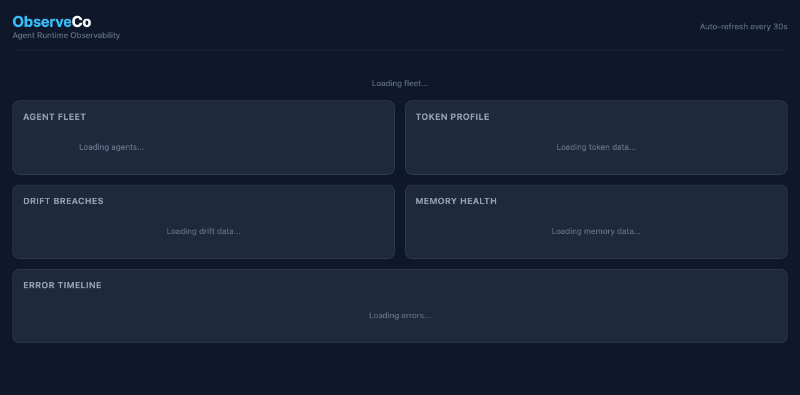

20+ features. One install. 60 seconds to first health data. Your data never leaves your machine.
Works with Hermes, OpenClaw, Ollama, LangChain, CrewAI, or any framework.

Everything you need to know if your agents are alive, what's in their context, and when something breaks. Plus webhook ingestion from Slack, Discord, and Telegram.
Agent liveness — alive, dead, or errored. Every 30 seconds. Zero config.
FreeN-failure trip → auto-block → cooldown. Stops cascade failures before they spread.
Free99.7% noise reduction. Only surfaces real issues, not flapping or transient errors.
FreeOne-click restart for dead agents. Manual trigger, you're in control.
FreeSee exactly what's in your agent's context — identity, skills, memory, tools, guidance.
Free7-day rolling token trend per component. Know before context bloat becomes a problem.
FreeFind bloated, duplicate, or unused skills eating your context window — now with compression preview and per-skill actions.
FreeDuplicates, contradictions, stale entries — find and fix memory bloat.
FreeSee what's loading into your agent's context — MEMORY.md, skills, workspace.
FreeFull error history with context snapshots. Not just logs — annotated events.
FreeSee alerts when you open the dashboard. Shows the discovery gap — how late you found out.
FreeAll data on your machine. Zero cloud. Zero telemetry. Your agents' data stays yours.
FreeReceive events from Slack, Discord, and Telegram. Translates to OEF → risk engine → alerts.
FreeTool calls flow through risk classification → session log → alert dispatch → circuit breaker.
FreeBuilt-in 429 handling with exponential backoff. Slack, Discord, Telegram calls never silently fail.
FreeFailed events are stored, not dropped. Retry, resolve, or purge from the API.
FreeEnterprise single sign-on with XML signature validation. Just-in-time user provisioning.
EnterpriseGoogle, GitHub login. Sessions persist across restarts via SQLite.
FreeAPI tokens encrypted at rest via OS keychain. No plaintext secrets on disk.
FreeVersioned schema migrations. Upgrade safely — no data loss, no breakage.
FreeHeartbeat file every cycle. External monitors can detect if the daemon is stuck.
Freepip install observeco — one command, no dependencies to manage.
Auto-detects your agents from config files. Zero configuration if you use Hermes or OpenClaw.
Dashboard shows fleet health, token breakdown, drift trends, and errors in real time.
We ship fast. Every week, new capabilities. The dashboard that sees problems also fixes them.
Pulse check, circuit breakers, token breakdown, drift tracking, memory garden, skill audit, heal button, error timeline, webhook ingestion, event pipeline, rate limiting, dead letter queue, SAML SSO, OAuth2, encrypted tokens, DB migrations.
Watch daemon auto-restarts dead agents. Telegram, webhook, and email alerts when agents break. Close the discovery gap.
40-60% fewer tokens per turn. Intent-aware context loading that only loads what your agent needs, when it needs it.
No signup. No account. Just open source.
$ pip install observeco && observeco dashboardGitHub · MIT License · Built for the AI agent community